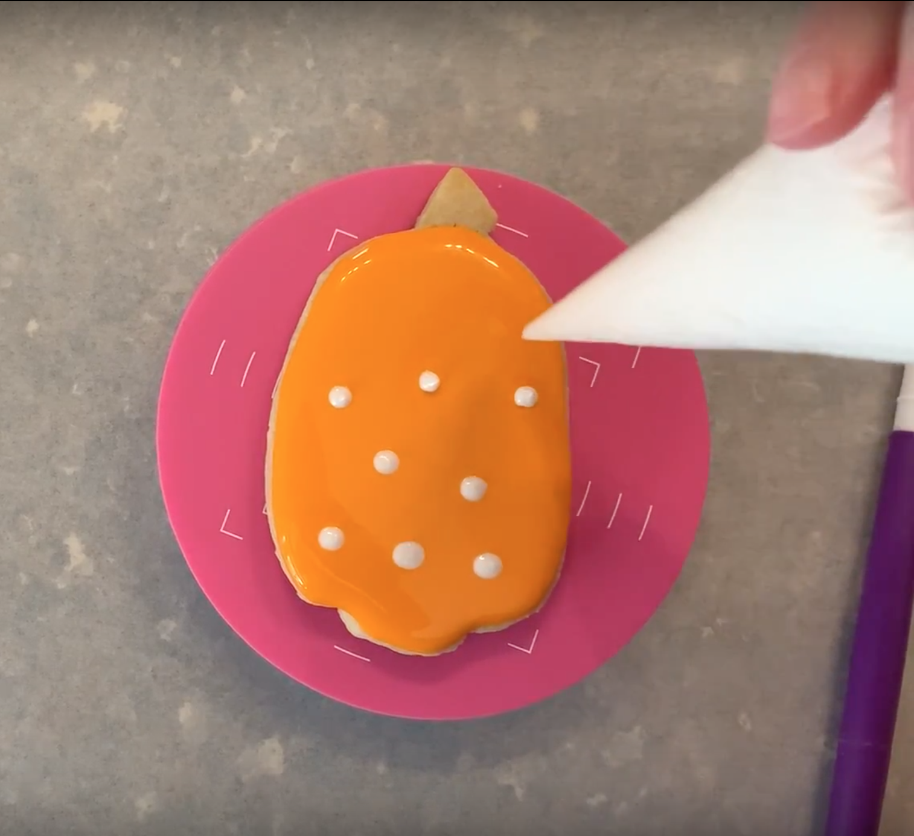
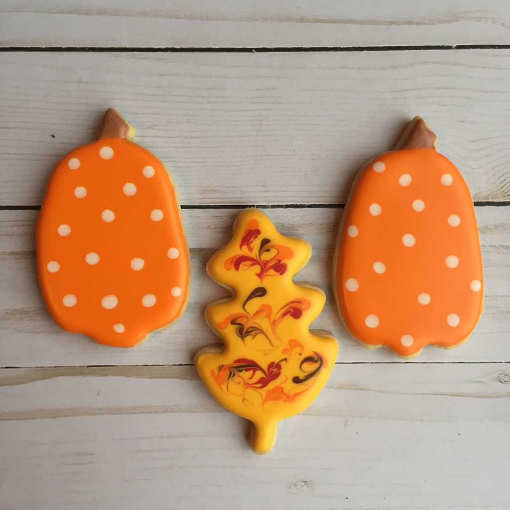

How to create polka dots with wet-on-wet icing technique
How to create polka dots with the wet-on-wet icing technique.
- Squeeze piping bag gently to drop spots of colored icing into flooded base icing.
- Release pressure on piping bag while lifting away from cookie.
- Let crust and dry.
The images below show wet-on-wet polka dots as they are being placed and after they have dried.

